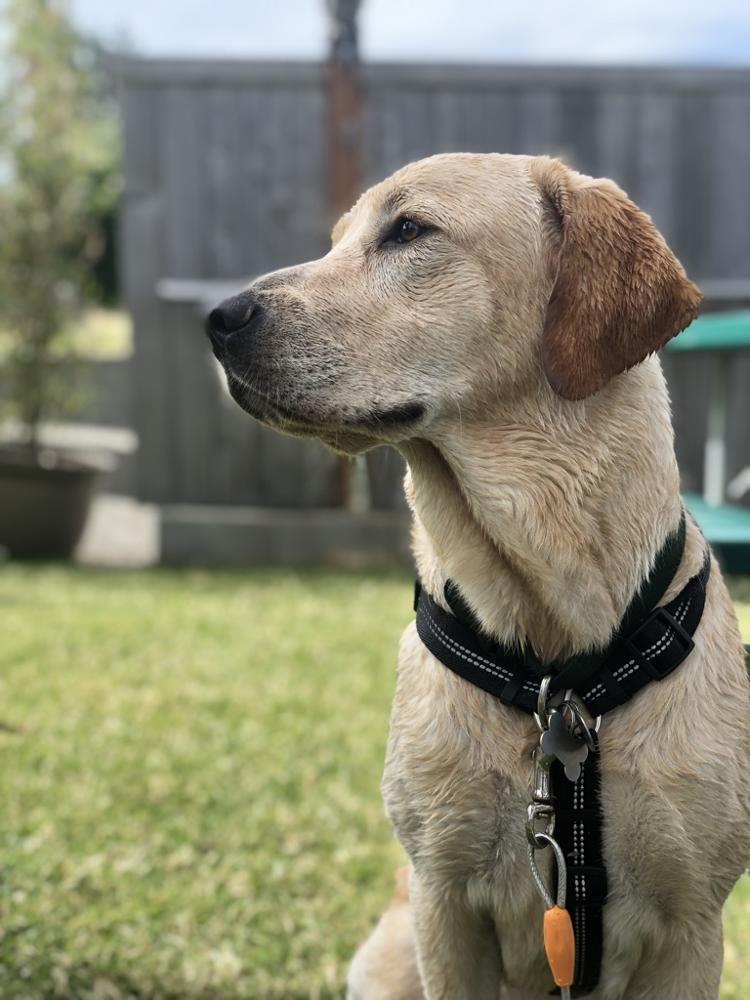

About
 Born and raised in Northwest Washington. Currently writing software at Nikola in Phoenix, AZ.
I have a beautiful son named Sam (featured below), and am engaged to Taylor.
Born and raised in Northwest Washington. Currently writing software at Nikola in Phoenix, AZ.
I have a beautiful son named Sam (featured below), and am engaged to Taylor.

That covers the interesting parts..